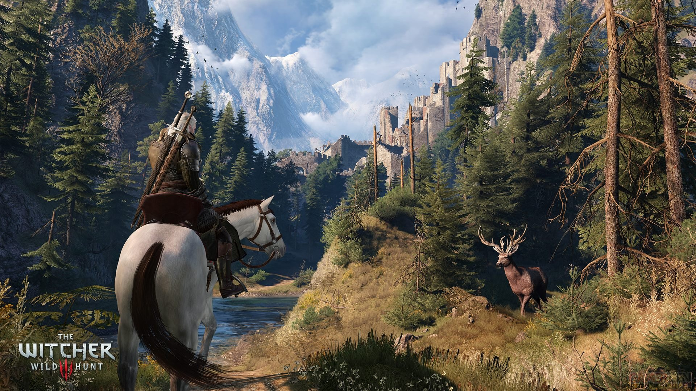

The Witcher 3 : Wild Hunt sorti le 18 mai 2015 est le 3éme opus de la série de jeux vidéo The Witcher. Nous en apprenons plus sur l’univers créé par l’écrivain Andrzej Sapkowski en 1986. Avec pas moins de quinze nouvelles et de six romans, il y a largement de quoi faire en matière d'adaptation.
Le studio CD Projekt s’en ai chargé en sortant The Witcher en 2007 suivit de The Witcher 2 puis The Witcher 3 contribuant largement à la notoriété de l’œuvre. Plus récemment, Netflix a proposé une adaptation en série télévisée fortement appréciée du publique.
A la suite de cet immense succès, CD Projekt a annoncé travailler sur un nouveau jeu The Witcher. Ce ne sera pas une suite mais plutôt une autre histoire se déroulant dans le même univers.


- 


Rôles


Trame

Les Royaumes du Nord sont en perdition, affaiblis par les batailles contre Nilfgaard, bien plus puissant. Outre le manque de rois, une nouvelle menace bien plus dangereuse est apparue : la Chasse Sauvage, composée de terrifiants spectres chevauchant des destriers squelettiques, semant le chaos et enlevant de jeunes enfants sur leur passage. Personne ne sait comment les vaincre, ni quel est leur but. Toutefois, ils semblent en vouloir particulièrement à Geralt de Riv, et pour l'atteindre, ils sont prêts à jouer sur les sentiments du Loup Blanc en s'en prenant à ses proches.
Geralt s'est remis de son amnésie, et il part à la recherche des gens qu'il aime pour les protéger et ce, quel qu'en soit le prix.